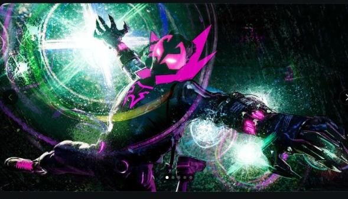
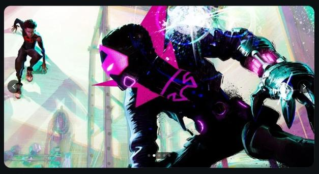
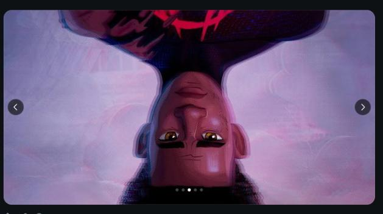
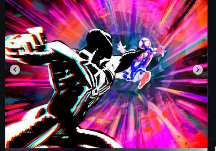
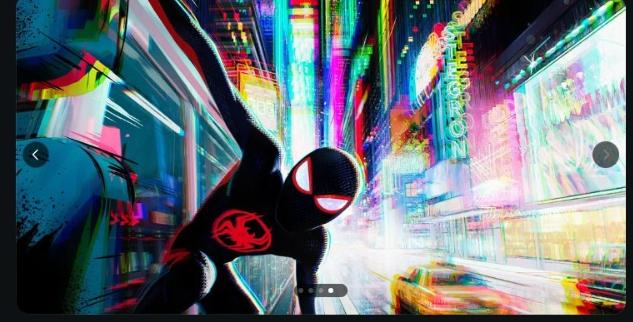
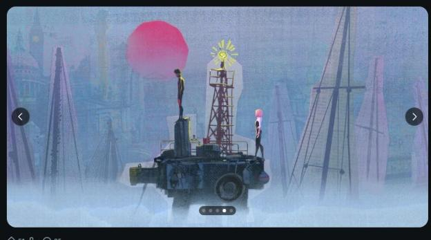

por que Homem aranha alem do aranhaverso foi adiado?
Homem aranha atrás do aranha verso foi lançado em 2023 e a continuação deveria ser lançado em março de 2024 mas adiaram por tempo indeterminado por que?
1.Em 2023 houve uma greve de roteiristas que dificultou a produção desse filme
2.a animação de homem aranha atrás do aranhaverso é muito complexa e para fazer um novo filme eles precisam melhorar essa qualidade e as vezes até refazer alguns detalhes que podem ser perdidos
Bom foi anunciado em 2025 que o filme está previsto para sair em junho de 2027, fotos do filme já foram anunciadas.





